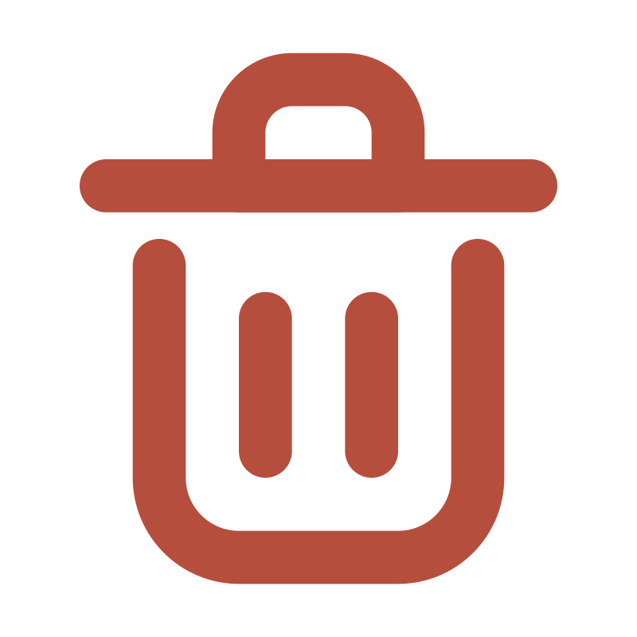
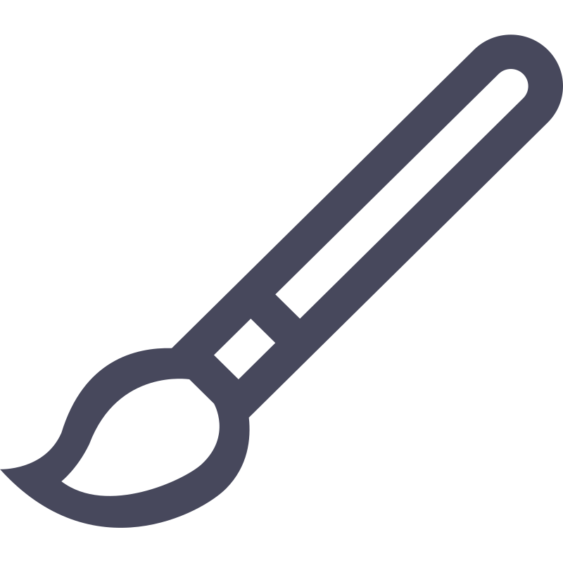

Open Canvas
Your Free Space for Art
Welcome
Welcome to Open Canvas! My final project for CPSC 2030.
This app's editor interace is heavily inspired by the pixel art app Aseprite, while the gallery view was inspired by Procreate.
Instructions
Folder structure
Setup
Double check the following before running the project:
- Create a database named opencanvas on phpMyAdmin
- Add a table named drawings to the database with the following columns:
- id: int(11) with auto increment enabled
- title: varchar(50)
- description: varchar(250)
- path: varchar(100)
- There should be an empty directory named uploads inside the database folder. Create the directory if necessary.
Using the app
The sidebar is accessible from the top left corner of the window, by clicking the menu button. 
The sidebar will give you access to the two main pages of the app.
Gallery page
This page will add cards, as you save projects to the database. If there are no projects in the database, only the New Project card will appear on the screen.
If there are projects saved, you will be able to open and edit or delete the files using the &  icons on each card.
Editor page
The file editor provides the basic tools that you would expect from a drawing application:
The colour picker, brush, eraser, paint bucket and clear canvas tool are accessible from the right side of the canvas.

The canvas will not be responsive unless the brush or bucket tools are selected.
Hit the save button once you feel ready to save your project. This will open the modal and ask you for a title and description for your drawing.
NOTE: The app allows saving empty drawings, because most apps allow empty projects.
Validation
Files with .php extension cannot be read by HTML validators.
CSS Validation
Credits
All svg files included in ./icons/ were found in SVG Repo. The original colours were changed to match the app's style
- Brush SVG Vector by Catalin Fertu, CC Attribution License
-
 Burger Menu SVG Vector by Salah Elimam, PD License
Burger Menu SVG Vector by Salah Elimam, PD License
- Clear SVG Vector by grommet, Apache License
-
 Close Circle SVG Vector by Solar Icons, CC Attribution License
Close Circle SVG Vector by Solar Icons, CC Attribution License
- Coffee SVG Vector by krystonschwarze, CC Attribution License
- Delete 2 SVG Vector by Ananthanath A X Kalaiism, PD License
- Edit SVG Vector by zest, MIT License
- Eraser SVG Vector by Solar Icons, CC Attribution License
- Heart SVG Vector by Dazzle UI, CC Attribution License
- Paint Bucket Color Colour SVG by wishforge.games, CC Attribution License